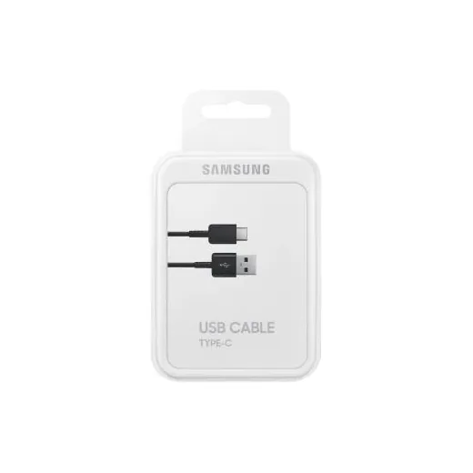
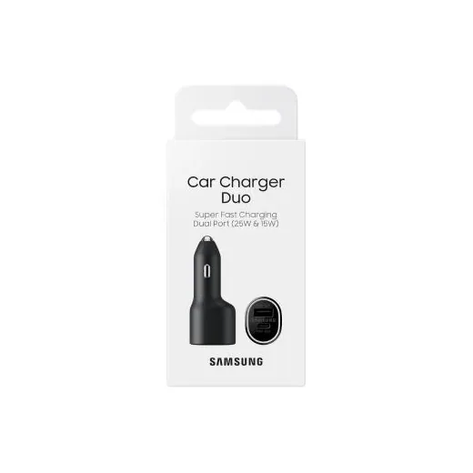
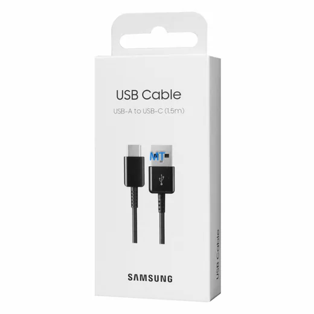
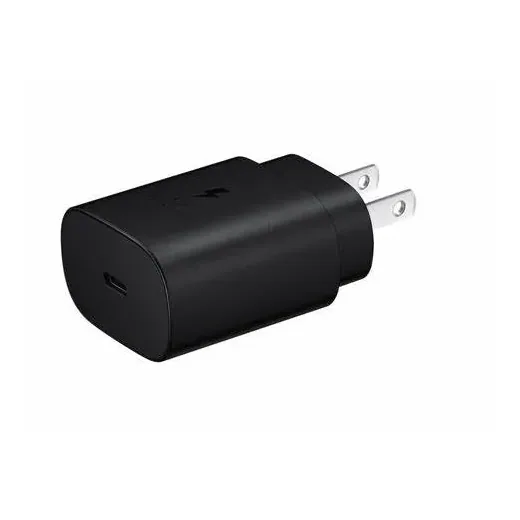
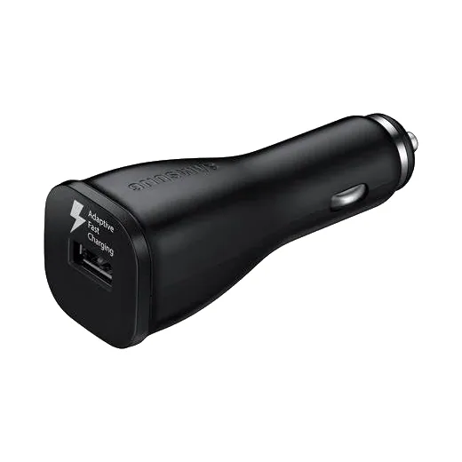
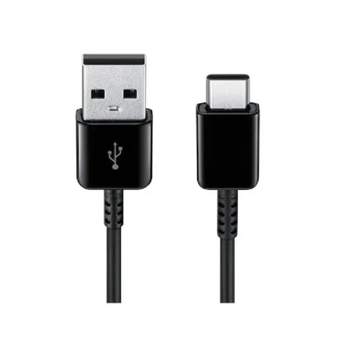

Inicio › Cargadores y cables › Samsung
Cargadores y cables Samsung en Honduras: precios comparados
15 productos Samsung en 4 tiendas (Gallo más Gallo, Diunsa, Lady Lee, Elektra). Desde L 239.
 Cargador D/Pared Samsung · 25WATTS/Negro/L 494.99En 2 tiendas · más barato en Gallo más Gallo
Cargador D/Pared Samsung · 25WATTS/Negro/L 494.99En 2 tiendas · más barato en Gallo más Gallo
Cable Samsung USB Tipo CL 395En Lady Lee
Adaptador Samsung para CarroL 295En Lady Lee Cargador Samsung de 25 WatsL 494.99En Lady Lee
Cargador Samsung de 25 WatsL 494.99En Lady Lee Cable Samsung Tipo C a Tipo C NgL 494.99En Lady Lee
Cable Samsung Tipo C a Tipo C NgL 494.99En Lady Lee
Cable Samsung 1.5M · USB Type a · USB TypL 249En Diunsa Bateria Portatil Samsung/10, 000MAHL 790En Diunsa
Bateria Portatil Samsung/10, 000MAHL 790En Diunsa Cargador D/Pared Samsung · 35WATTS/sin CaL 890En Diunsa
Cargador D/Pared Samsung · 35WATTS/sin CaL 890En Diunsa Cargador Samsung Inalambrico/25W/BlackL 990En Diunsa
Cargador Samsung Inalambrico/25W/BlackL 990En Diunsa Cargador D/Pared Samsung/45WATTS/sin CabL 990En Diunsa
Cargador D/Pared Samsung/45WATTS/sin CabL 990En Diunsa Bateria Portatil Samsung/10, 000MAH/C · CaL 990En Diunsa
Bateria Portatil Samsung/10, 000MAH/C · CaL 990En Diunsa Bateria Inalam Samsung/Mag/QI2/15W/GrayL 1,290En Diunsa
Bateria Inalam Samsung/Mag/QI2/15W/GrayL 1,290En Diunsa
Cargador de Pared Samsung 25WL 337En Elektra
Cargador de Carro Samsung 40WL 438En Elektra
Samsung Cable Tipo C a Tipo CL 239En Elektra
Preguntas frecuentes
¿Dónde están más baratos los cargadores y cables Samsung en Honduras?
Gallo más Gallo tuvo el precio más bajo en 1 de 1 productos Samsung que se venden en varias tiendas (14 de noviembre de 2026).